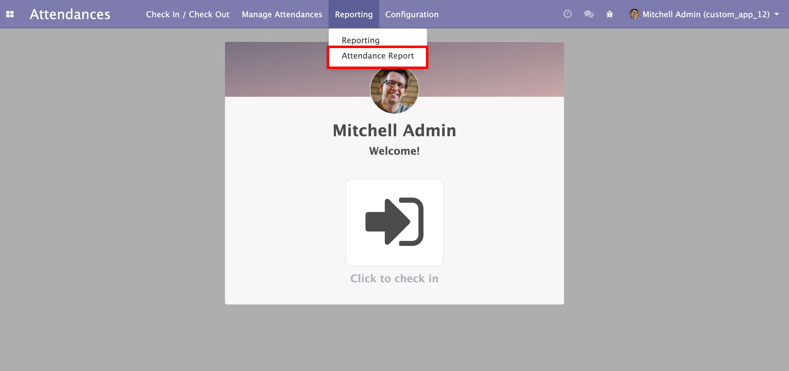
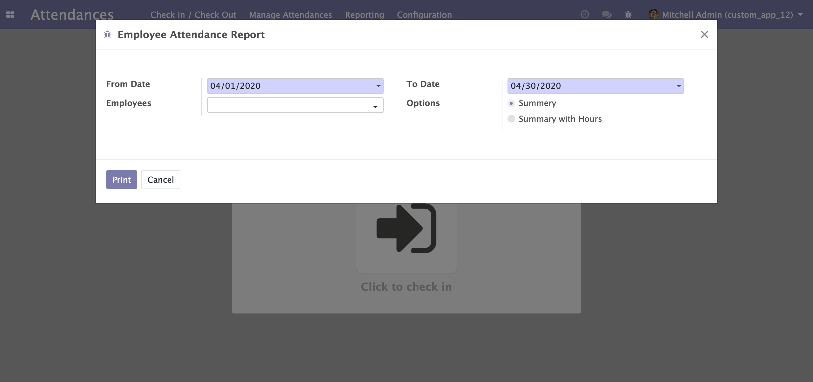
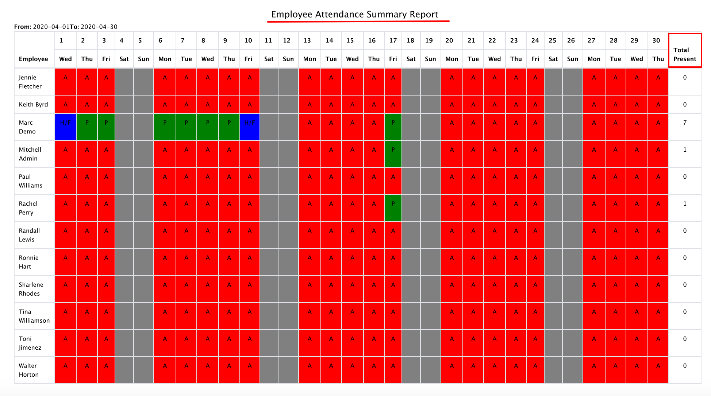
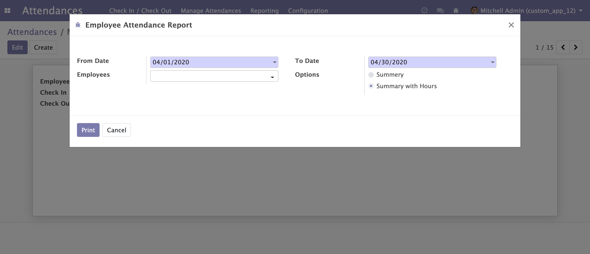
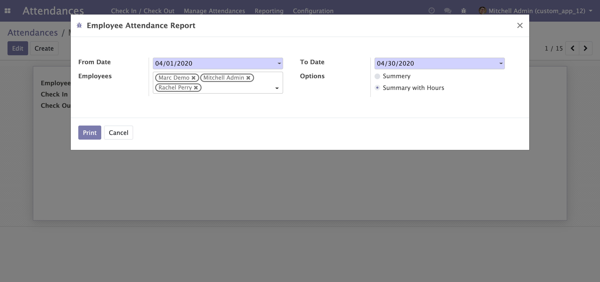
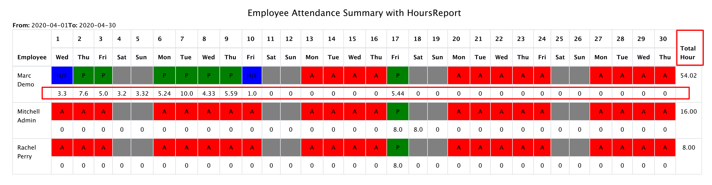

Available Key Features
- Print Employee Attendance Report between dates.
- Employee Attendance Report includes status summery line ( A - Absent, P - Present, H/F - Half Day) as well as with hours Summery (Attendance Hours of that day).
- Show attendance status in report with different color like,
- Absent - Red
- Present - Green
- Half Day - Blue
- Week off - Gray
- Report is based on Selected employees or all.
1. Attendance Report Menu

2. All Employee Summery Attendance Report
A). All employee summery will show attendance status of each employee based on date range.

B). Print all employee attendance status in report 
3. All Employee Summary with Hours Attendance Report
A). All employee summery with Hours status of each employee based on date range

B). Print all employee attendance status with attendance hours in report

4. Selected Employee Summary with Hours Attendance Report
A). Selected employee summery with Hours status of each employee based on date range

B). Print Selected employee attendance status with attendance hours in report 